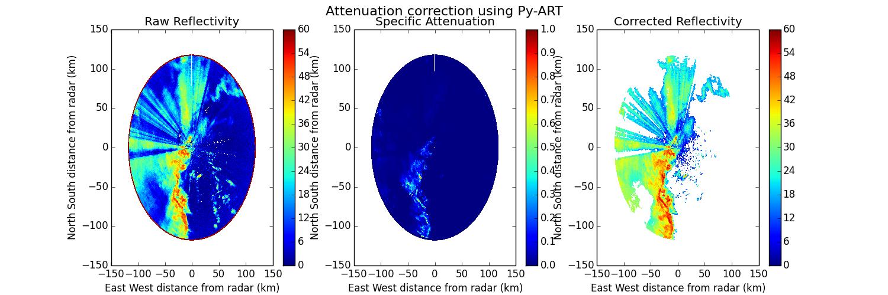

In this example the reflectivity attenuation is calculated and then corrected for a polarimetric radar using a Z-PHI method implemented in Py-ART.
Python source code: plot_attenuation.py
print __doc__
# Author: Jonathan J. Helmus (jhelmus@anl.gov)
# License: BSD 3 clause
import matplotlib.pyplot as plt
import pyart
RADAR_NAME = 'sgpcsaprsurcmacI7.c0.20110520.095101.nc'
# read in the data
radar = pyart.io.read_cfradial(RADAR_NAME)
# remove existing corrections
radar.fields.pop('specific_attenuation')
radar.fields.pop('corrected_reflectivity_horizontal')
# perform attenuation correction
spec_at, cor_z = pyart.correct.calculate_attenuation(radar, 0)
radar.add_field('specific_attenuation', spec_at)
radar.add_field('corrected_reflectivity_horizontal', cor_z)
# create the plot
fig = plt.figure(figsize=(15, 5))
ax1 = fig.add_subplot(131)
display = pyart.graph.RadarDisplay(radar)
display.plot_ppi('reflectivity_horizontal', 0, ax=ax1, vmin=0, vmax=60.,
colorbar_label='',
title='Raw Reflectivity')
ax2 = fig.add_subplot(132)
display.plot_ppi('specific_attenuation', 0, vmin=0, vmax=1.0,
colorbar_label='', ax=ax2,
title='Specific Attenuation')
ax3 = fig.add_subplot(133)
display = pyart.graph.RadarDisplay(radar)
display.plot_ppi('corrected_reflectivity_horizontal', 0, vmin=0, vmax=60.,
colorbar_label='', ax=ax3,
title='Corrected Reflectivity')
plt.suptitle('Attenuation correction using Py-ART', fontsize=16)
plt.show()
Total running time of the example: 8.98 seconds